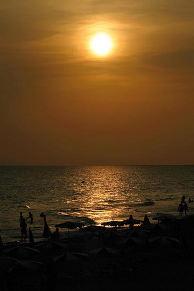

La notte e l'eleganza
Il sole è tremendamente generoso con Minorca, però non potete abbandonare l'isola senza conoscere la sua luna e la magia della notte. Quando il sole va a letto, questo pezzo di terra cambia il suo aspetto, però senza perdere la sua essenza. Sotto il manto delle stelle, Minorca è un'altra Minorca. Autentica, come sempre, però diversa.
L'isola vi offre due grandi zone di divertimento, curiosamente vicino al mare; il porto di Ciuttadella e quello di Mahon. Qui è dove si concentra il maggior numero di locali notturni, però ne troverete anche nei centri turistici. Informatevi prima di pianificare una uscita notturna. Potrete ballare, chiaccherare, bere una coppa o semplicemente stare con i vostri amici mentre il sole si prende un meritato riposo nelle acque mediterranee.
Troverete una gran varietà di stili, dai locali nei quali si muove lo scheletro a ritmo della canzone di moda ad ambienti più esclusivi, nei quali predomina il chill-out e l'eleganza. Le terrazze sono una eccellente opzione nelle notti d'estate. Passeggiate, guardate e scoprite. Sicuramente troverete una buona forma di passare la notte minorchina.
Questo si, dimenticatevi le grandi discoteche, gli spazi che accumulano centinaia di persone con la musica troppo alta. Minorca è vanitosa anche per la notte, e cerca di nuovo equilibrio.
E se anche voi siete vanitosi, l'isola vi offre tutto quello di cui avetet bisogno per vestire la notte con eleganza e distinzione. Date una occhiata alle oreficerie dell'isola, cercate i prodotti fabbricati a mano dagli artigiani di Minorca.
Ricordatevi che in questa isola la bigiotteria ha vissuto epoche eccelse, e ancora oggi gli impresari isolani risaltano per la loro originalità e disegno.
Potrete trovare pezzi esclusivi e unici, che vi permetteranno di minorchizzarvi e, in più, prendersi un ricordo inimitabile di questo piccolo paradiso in pieno Mediterraneo. Date un occhiata ai nostri annunci. Sicuramente non vi deluderanno.